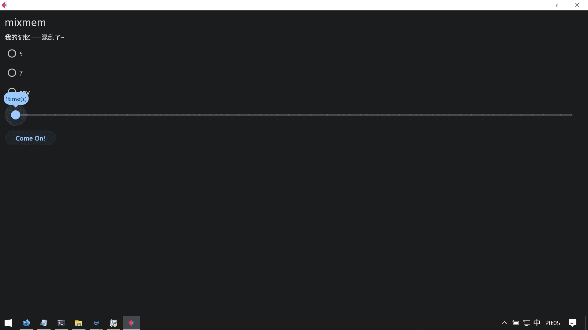
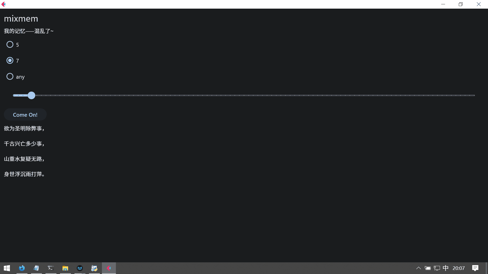
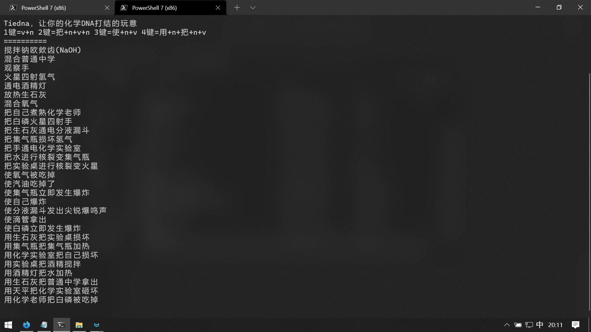

DNA打结器
一共两个
语文版：mixmem
化学版：tiedna
用的技术不一样
MixMem
从网上忘了哪里把初中古诗词搞了过来，写了个已经删掉了的程序根据符号分段成了一行一句
话说那个崽是没有强迫症吗，大多数用，，少数用,，再加上古诗词本来就有的其他符号，给我增工作量呢，滚动条拖着拖着就发现有几行特别长，一看就是没有正确分句，就这个弄了一段时间
其他不难，随手做的，练习一下，顺便试试新东西——Flet
这是我找到的有一个GUI框架，是用Flutter显示的，API还算友好~~（感觉不如dpg）~~，就喜欢这种，随手做了一下
效果
解：如图所示

你可以选择仅五个字的诗句、仅七个字的、没有限制的
可以选择生成1~100个诗句
一句的话……还挺适合复习的
Come On一下，就能生成
就像这样：

你可以选中文本复制
有吏夜捉人。
如闻泣幽咽。
你会发现很多奇妙的组合
TieDNA
这个就没那么复杂了，随便做的
（挺像那个乱用主谓宾的小游戏啊）
命令行显示 + msvcrt检测按键
运行时按不同的按键有不同的句式

（图中7个是1模式，7个是2模式，7个是3模式，7个是4模式，）
离谱就对了
（不会有人不知道n是名词v是动词吧）
你会发现很多奇怪的组合
用天平把化学实验室砸坏 用化学老师把白磷被吃掉
我特意写了立即发生爆炸 化学实验室 化学老师
十分的有趣啊~